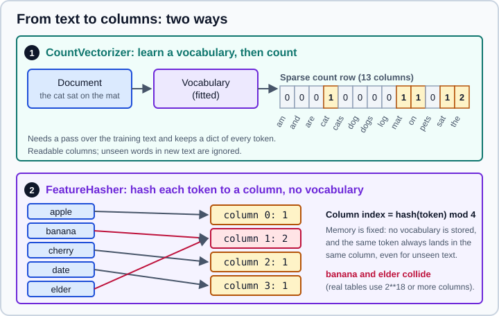

Feature Extraction: Text, Dicts & Hashing
|
This content was generated with the assistance of AI and should be verified against the official documentation before being relied on in production. |
This page targets NumPy 2.5, pandas 3.1 and scikit-learn 1.9, and it was checked in October 2026. Examples target Python 3.13 or 3.14. Every Python example was run on Python 3.13.18, NumPy 2.5.4, pandas 3.1.0 and scikit-learn 1.9.1. The package is called scikit-learn, it is installed with pip install scikit-learn and it is imported as sklearn.
Machine learning estimators work on a two-dimensional numeric matrix. Real data often does not arrive that way: it is a list of Python dictionaries, a column of sentences, a bag of tags or a picture. The sklearn.feature_extraction module turns these into matrices. The term feature extraction in scikit-learn means this conversion; it is different from feature selection (choosing among existing columns, see Feature Selection) and from dimensionality reduction (see PCA, TruncatedSVD & NMF).
The module has four groups: DictVectorizer and FeatureHasher for mappings of feature names to values, the text vectorizers (CountVectorizer, TfidfTransformer, TfidfVectorizer, HashingVectorizer), and the image helpers in sklearn.feature_extraction.image. All of them return sparse SciPy matrices by default, because most entries are zero.
The encoding of categorical columns of a data frame (OneHotEncoder, OrdinalEncoder, TargetEncoder) is described on Encoding Categorical Features; the broader view of text, dates and other transformations is on Feature Engineering.

Original drawing. The hashed lane uses alternate_sign=False so that the counts stay readable.
DictVectorizer: dictionaries to a matrix
DictVectorizer converts a list of mappings into a matrix. A numeric value becomes a numeric column named after the key. A string (or Boolean) value is one-hot encoded: the key and value are joined by separator (default =) into a column such as city=Madrid. Keys that are absent from a sample count as zero, which gives the sparse structure for free.
from sklearn.feature_extraction import DictVectorizer
records = [
{"city": "Madrid", "temp": 21.5},
{"city": "Lyon", "temp": 17.0},
{"city": "Madrid", "rain": 1},
]
dv = DictVectorizer(sparse=False)
print(dv.fit_transform(records))
print(dv.get_feature_names_out())
print(dv.transform([{"city": "Rome", "temp": 5}])) # unseen category: ignored
print(dv.inverse_transform(dv.transform(records[:1])))[[ 0. 1. 0. 21.5]
[ 1. 0. 0. 17. ]
[ 0. 1. 1. 0. ]]
['city=Lyon' 'city=Madrid' 'rain' 'temp']
[[0. 0. 0. 5.]]
[{'city=Madrid': np.float64(1.0), 'temp': np.float64(21.5)}]Properties worth knowing:
-
Columns are sorted alphabetically by name when
sort=True(the default), so the layout is reproducible. -
Categories first seen at
transformtime are silently ignored, with no error, as shown forRome. UnlikeOneHotEncoder, there is nohandle_unknownoption. -
A feature whose value is a list of strings (a set of tags) is expanded to one column per element, with value 1, so a multi-valued field needs no special handling.
-
The default output is a
scipy.sparseCSR matrix. Usesparse=Falseonly for small examples or when the next step needs a dense array. -
The values are numbers of type
dtype(float64by default). Missing values are the absence of the key, notNaN.
DictVectorizer is mostly useful when the data already is a list of dictionaries, for instance JSON records or the output of a hand-written feature function. For a data frame, convert it with df.to_dict(orient="records") or use ColumnTransformer with OneHotEncoder, which handles unknown categories explicitly.
FeatureHasher: dictionaries without a vocabulary
FeatureHasher does the same job as DictVectorizer without remembering which feature names it saw. It maps each name to a column index with a hash function (the signed 32-bit variant of MurmurHash3) and the number of columns is fixed in advance by n_features (default 1048576, that is 2**20). Nothing is learned, so fit does nothing and the transformer is stateless. This trades inspectability and a small chance of collisions for constant memory and speed.
| Parameter | Meaning |
|---|---|
|
Number of output columns. Powers of two are customary. A larger number means fewer collisions. |
|
|
|
|
|
Type of the values, |
from sklearn.feature_extraction import FeatureHasher
hasher = FeatureHasher(n_features=4, input_type="string", alternate_sign=False)
print(hasher.transform([["apple", "banana", "cherry", "date", "elder"]]).toarray())
wide = FeatureHasher(n_features=2**20, input_type="string")
print(wide.transform([["apple", "banana"]]).shape)[[1. 2. 1. 1.]]
(1, 1048576)Source: scikit-learn: Feature hashing.
Five tokens went into four columns, so at least two collide (banana and elder land in the same column here, giving a count of 2). With 2**20 columns the chance that two of a few thousand distinct tokens collide is small, and model accuracy is rarely affected. Because the mapping is one-way, there is no inverse_transform and no list of feature names, so interpreting coefficients becomes difficult.
Text: from documents to a bag of words
The usual first representation of text is a bag of words: each document becomes a vector with one column per vocabulary term and the term counts as values. Word order is thrown away. scikit-learn builds it in three stages: preprocessing (lowercasing and optional accent stripping), tokenizing (splitting into words or character n-grams) and counting, optionally followed by weighting.
CountVectorizer
CountVectorizer learns a vocabulary in fit and counts occurrences in transform. The result is a sparse matrix with one row per document.
from sklearn.feature_extraction.text import CountVectorizer
docs = [
"The cat sat on the mat.",
"The dog sat on the log.",
"Cats and dogs are pets!",
"I am a cat",
]
vectorizer = CountVectorizer()
X = vectorizer.fit_transform(docs)
print(type(X).__name__, X.shape, X.nnz)
print(vectorizer.get_feature_names_out())
print(X.toarray())
print(vectorizer.transform(["cat cat zebra"]).toarray())csr_matrix (4, 13) 17
['am' 'and' 'are' 'cat' 'cats' 'dog' 'dogs' 'log' 'mat' 'on' 'pets' 'sat'
'the']
[[0 0 0 1 0 0 0 0 1 1 0 1 2]
[0 0 0 0 0 1 0 1 0 1 0 1 2]
[0 1 1 0 1 0 1 0 0 0 1 0 0]
[1 0 0 1 0 0 0 0 0 0 0 0 0]]
[[0 0 0 2 0 0 0 0 0 0 0 0 0]]Several defaults deserve attention, and each can hide a surprise:
-
The default
token_patternis(?u)\b\w\w\b+, which keeps only tokens of two or more word characters. The words "I" and "a" in the fourth document are silently dropped, which is why the fourth row only hasamandcat. Passtoken_pattern=r"(?u)\b\w\b"+to keep single characters. -
Text is lowercased (
lowercase=True). Punctuation is a separator, so "mat." and "mat" are the same token. -
"cat" and "cats" are different columns: there is no stemming or lemmatisation. Supply a
tokenizerorpreprocessorthat does it, or stem the text beforehand with a library such as NLTK or spaCy. -
Words not in the vocabulary (
zebra) are ignored attransformtime, so the output width never changes afterfit. -
A text that yields no tokens at all can raise
ValueError: empty vocabulary; perhaps the documents only contain stop words. -
Accented letters are kept unless
strip_accents="unicode"(or"ascii") is given; with it, "café" becomes "cafe".
Controlling the vocabulary
| Parameter | Effect |
|---|---|
|
Also counts sequences of 1 to 2 consecutive tokens (bigrams). The vocabulary can grow very large, so combine with |
|
|
|
|
|
Ignore terms appearing in fewer than |
|
Keep only the most frequent terms, by total count across the corpus. |
|
Record presence (1) rather than counts; useful for short texts and for |
|
A fixed list or mapping of terms. Nothing is learned; useful to compare a model against a controlled word list. |
|
Type of the counts ( |
|
Callables that replace the built-in steps. If you give |
from sklearn.feature_extraction.text import CountVectorizer
docs = [
"The cat sat on the mat.",
"The dog sat on the log.",
"Cats and dogs are pets!",
"I am a cat",
]
print(CountVectorizer(stop_words="english", ngram_range=(1, 2), binary=True).fit(docs).get_feature_names_out())
print(CountVectorizer(analyzer="char_wb", ngram_range=(2, 3)).fit(["cat"]).get_feature_names_out())
print(CountVectorizer(token_pattern=r"(?u)\b\w+\b").fit(docs).get_feature_names_out()[:5])
print(CountVectorizer(max_features=3).fit(docs).get_feature_names_out())
print(CountVectorizer(min_df=2).fit(docs).get_feature_names_out())
print(CountVectorizer(strip_accents="unicode").fit(["café Ñandú"]).get_feature_names_out())['cat' 'cat sat' 'cats' 'cats dogs' 'dog' 'dog sat' 'dogs' 'dogs pets'
'log' 'mat' 'pets' 'sat' 'sat log' 'sat mat']
[' c' ' ca' 'at' 'at ' 'ca' 'cat' 't ']
['a' 'am' 'and' 'are' 'cat']
['cat' 'on' 'the']
['cat' 'on' 'sat' 'the']
['cafe' 'nandu']Source: scikit-learn: CountVectorizer.
Note that with stop_words="english" the bigram cat sat is kept even though "the" was removed: stop words are removed before n-grams are formed, so sat mat appears although the sentence says "sat on the mat". The vocabulary after removal describes a shortened text.
Tf-idf weighting
Raw counts over-weight words that appear everywhere ("the"). Tf-idf (term frequency times inverse document frequency) scales a count by how rare the term is across documents. scikit-learn uses the smoothed idf ln1 + n) / (1 + df + 1, where n is the number of documents and df the number of documents containing the term, then normalises each row to unit Euclidean length (norm="l2").
TfidfTransformer applies the weighting to a count matrix you already have; TfidfVectorizer is CountVectorizer followed by TfidfTransformer in one step. Both accept use_idf, smooth_idf (add one to the document frequencies to avoid division by zero), sublinear_tf (use 1 + log(tf) instead of tf, so that 20 occurrences do not weigh 20 times as much as 1) and norm ("l2" default, "l1" or None).
import numpy as np
from sklearn.feature_extraction.text import TfidfVectorizer
docs = ["aa bb", "aa cc", "aa dd"]
tfidf = TfidfVectorizer().fit(docs)
print(dict(zip(tfidf.get_feature_names_out(), tfidf.idf_.round(3).tolist())))
row = tfidf.transform(["aa bb"]).toarray()
print(row.round(3))
by_hand = np.array([tfidf.idf_[0], tfidf.idf_[1], 0.0, 0.0])
print((by_hand / np.linalg.norm(by_hand)).round(3))
print(dict(zip(tfidf.get_feature_names_out(),
TfidfVectorizer(smooth_idf=False).fit(docs).idf_.round(3).tolist()))){'aa': 1.0, 'bb': 1.693, 'cc': 1.693, 'dd': 1.693}
[[0.509 0.861 0. 0. ]]
[0.509 0.861 0. 0. ]
{'aa': 1.0, 'bb': 2.099, 'cc': 2.099, 'dd': 2.099}Source: scikit-learn: Tf-idf term weighting.
The word aa, present in every document, gets the minimum idf of 1; each rarer word gets a larger idf, ln(4/2) + 1 = 1.693. Without smoothing (smooth_idf=False) the value is ln(3/1) + 1 = 2.099. Because of the + 1 term, a word present in every document is not removed, only down-weighted. These formulas differ from the textbook log(n / df), a common reason why a hand calculation does not match idf_.
A complete text classifier
Vectorizer and classifier belong in one Pipeline, so the vocabulary and idf values are learned from each training fold only and so that new text goes through exactly the same steps. A word seen only in the validation fold must not influence the vocabulary of the model that is being validated. The data below is a tiny invented set of subject lines to keep the example self-contained; use a real corpus for anything beyond a demonstration.
import numpy as np
from sklearn.feature_extraction.text import TfidfVectorizer
from sklearn.linear_model import LogisticRegression
from sklearn.model_selection import StratifiedKFold, cross_val_score
from sklearn.pipeline import make_pipeline
docs = [
"win a free prize now", "free money click here", "limited offer win cash now",
"claim your free reward today", "cheap loans click now", "urgent prize waiting claim cash",
"exclusive offer free gift", "you won a free holiday",
"meeting moved to monday morning", "please review the attached report",
"lunch with the team tomorrow", "can you send the project schedule",
"notes from the sprint meeting", "the report is ready for review",
"schedule a call about the budget", "see you at the team lunch",
]
y = np.array([1] * 8 + [0] * 8) # 1 = promotional, 0 = work
model = make_pipeline(
TfidfVectorizer(ngram_range=(1, 2), sublinear_tf=True),
LogisticRegression(C=10),
)
cv = StratifiedKFold(4, shuffle=True, random_state=0)
print(cross_val_score(model, docs, y, cv=cv).mean().round(3))
model.fit(docs, y)
names = model[0].get_feature_names_out()
order = np.argsort(model[-1].coef_[0])
print("work :", list(names[order[:5]]))
print("promo :", list(names[order[-5:]][::-1]))
print(model.predict(["free cash prize", "review the schedule"]))0.938
work : ['the', 'meeting', 'schedule', 'review', 'report']
promo : ['free', 'now', 'click', 'offer', 'claim']
[1 0]Note that cross_val_score receives the raw list of strings: the vectorizer is part of the estimator. A common mistake is to call fit_transform on all documents first and cross-validate only the classifier, which lets the vocabulary and idf statistics see the validation fold (a mild but real form of leakage; see Common Pitfalls: Leakage & Randomness). Hyperparameters of the vectorizer, such as tfidfvectorizer__ngram_range or tfidfvectorizer__min_df, can be tuned together with the classifier through GridSearchCV, see Grid, Randomized & Halving Search.
For data frames with text and other columns, pass the text column name (as a string, not a list) to ColumnTransformer, because the vectorizers expect a one-dimensional iterable of documents. With a list such as ["text"] the vectorizer receives a one-column data frame, iterates over its column names and silently builds a one-row matrix whose vocabulary is the column name. See ColumnTransformer & Heterogeneous Data.
HashingVectorizer: text for very large corpora
CountVectorizer keeps its vocabulary in memory, and building it needs a first pass over all the text. For very large or streaming corpora, HashingVectorizer combines the tokenizer of CountVectorizer with the hashing trick: each token is hashed to a column among n_features (default 2**20), so the transformer is stateless, can process batches independently and works with partial_fit estimators for out-of-core learning. Its default norm="l2" and alternate_sign=True yield signed, normalised rows.
from sklearn.feature_extraction.text import HashingVectorizer
docs = [
"The cat sat on the mat.",
"The dog sat on the log.",
"Cats and dogs are pets!",
"I am a cat",
]
hv = HashingVectorizer(n_features=2**10, alternate_sign=False, norm=None)
H = hv.transform(docs)
print(H.shape, H.nnz)
print(hasattr(hv, "vocabulary_"), hasattr(hv, "get_feature_names_out"))
tiny = HashingVectorizer(n_features=2**4, alternate_sign=False, norm=None)
print(tiny.transform(docs).toarray().sum(axis=1))(4, 1024) 17
False False
[6. 6. 5. 2.]With 1,024 columns the matrix has the same 17 non-zero entries as the earlier count matrix, so no two words of this tiny corpus collided. With only 16 columns the non-zero entries would merge, but with alternate_sign=False and norm=None the counts accumulate, so every row still sums to the number of tokens kept in that document (6, 6, 5 and 2). Limitations to remember:
-
There is no
vocabulary_, no feature names and noinverse_transform, so you cannot say which word a column stands for. -
Collisions are possible;
alternate_sign=Truemakes them cancel on average and is a good default unless the next step needs non-negative input. -
There is no idf weighting built in; chain a
TfidfTransformerafter it if you need it (that makes the pipeline stateful again, with idf learned from the training batches). -
The same token always maps to the same column on every run and every machine, so the transformer is reproducible and can be applied to new text without re-fitting.
Text analysis beyond bags of words
The bag-of-words representation ignores order, meaning and grammar: "dog bites man" and "man bites dog" get the same vector, and synonyms are different columns. ngram_range recovers a little local order. For semantic similarity and modern language tasks the usual step is to use pre-trained embeddings or transformer models, which are outside scikit-learn; the output of such a model can be passed to scikit-learn estimators as a dense matrix. The truncated SVD of a tf-idf matrix (latent semantic analysis) is the classical scikit-learn way to obtain dense low-dimensional text features.
Images: patches and connectivity
The sklearn.feature_extraction.image module is small. extract_patches_2d slides a window over an image and returns all patches; PatchExtractor does it for many images, reconstruct_from_patches_2d averages overlapping patches back into an image, and grid_to_graph / img_to_graph build the connectivity graph of pixels (used for structured clustering). Patch extraction is useful for dictionary learning and denoising. Convolutional networks have replaced hand-made image features for most image tasks.
import numpy as np
from sklearn.feature_extraction.image import (extract_patches_2d, grid_to_graph,
reconstruct_from_patches_2d)
image = np.arange(16).reshape(4, 4)
patches = extract_patches_2d(image, (2, 2))
print(patches.shape)
print(patches[0])
print(extract_patches_2d(image, (2, 2), max_patches=2, random_state=0).shape)
print(reconstruct_from_patches_2d(patches, (4, 4)))
print(grid_to_graph(2, 2).toarray())(9, 2, 2)
[[0 1]
[4 5]]
(2, 2, 2)
[[ 0. 1. 2. 3.]
[ 4. 5. 6. 7.]
[ 8. 9. 10. 11.]
[12. 13. 14. 15.]]
[[1 1 1 0]
[1 1 0 1]
[1 0 1 1]
[0 1 1 1]]A 4 by 4 image has nine overlapping 2 by 2 patches ((4 - 2 + 1) ** 2). max_patches samples a random subset (an integer count or a fraction), and random_state makes that sampling reproducible. The graph from grid_to_graph(2, 2) connects each pixel to its neighbours and to itself, which is why the diagonal is 1.
Choosing a tool
| Data | Use | Notes |
|---|---|---|
List of dicts with strings and numbers |
|
Keeps readable names; unseen categories are ignored. |
Huge or open-ended set of feature names |
|
Fixed memory; collisions possible; no names. |
Documents, medium size, interpretability needed |
|
Tune |
Documents, very large or streaming |
|
Stateless; no vocabulary; combine with |
Short texts, presence matters |
|
Often more stable than tf-idf on very short text. |
Misspellings, other languages without spaces |
|
Larger vocabulary, language-independent. |
Meaning and context |
Pre-trained embeddings or transformers, or LSA with |
Outside the scope of this module. |
Pitfalls
-
Fitting the vectorizer on all the text before cross-validation. Put it in a
Pipelineso each fold learns its own vocabulary. -
Dense conversion. Calling
.toarray()on a matrix with 100,000 columns can exhaust memory. Keep it sparse and use estimators that accept sparse input (linear models, naive Bayes,LinearSVC,SGDClassifier). -
Dropped one-character tokens. The default
token_patternremoves "a", "I" and single digits; change it when they matter. -
Passing a list of one column to
ColumnTransformerfor a text vectorizer (use the string name). -
Language assumptions.
"english"stop words and ASCII-oriented tokenisation are poor for other languages; supply a stop word list and considerstrip_accentsandchar_wbn-grams. -
Comparing idf by hand with the textbook formula. scikit-learn adds smoothing and a constant 1.
-
Vocabulary size explosion with n-grams. Combine
ngram_rangewithmin_dformax_features. -
Reusing a fitted vocabulary across versions. A pickled vectorizer is tied to the scikit-learn version, see Model Persistence & Security.
Where older books and tutorials are outdated
| Older statement | Current practice (scikit-learn 1.9) |
|---|---|
|
Replaced by |
|
Use |
|
|
|
Use |
|
Pass |
|
|
Positional constructor arguments such as |
All parameters are keyword-only since 1.0. |